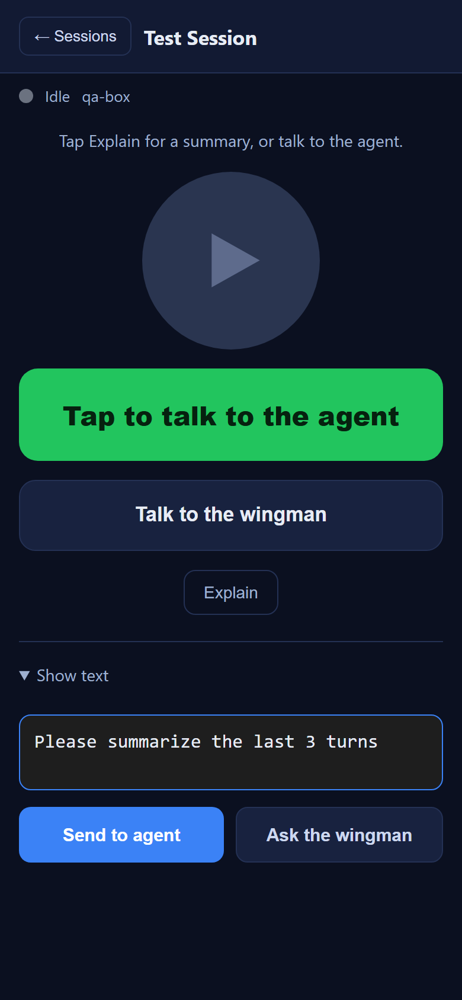
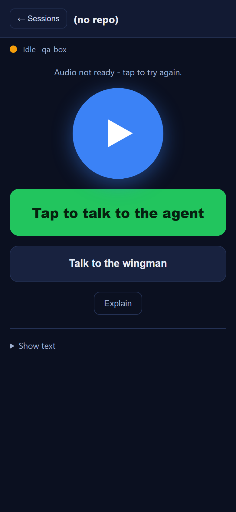
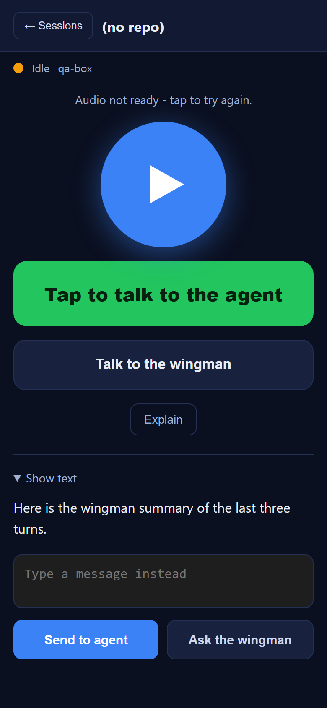
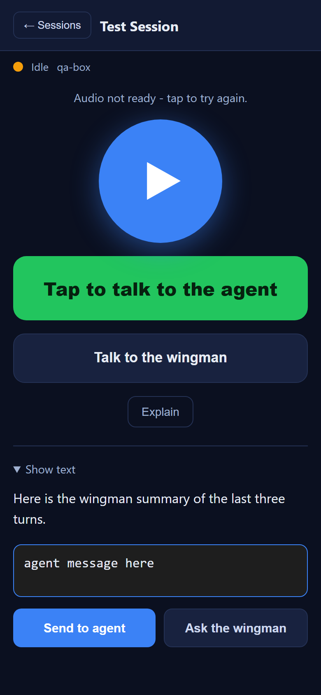
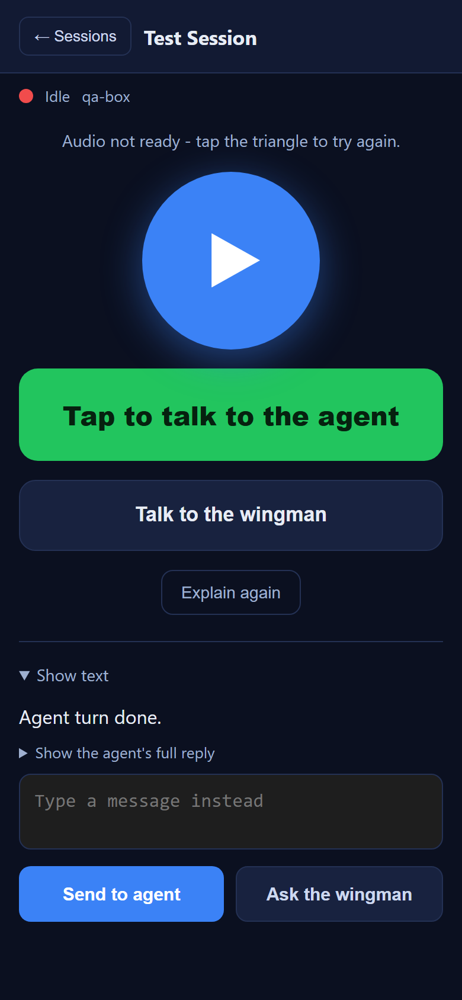
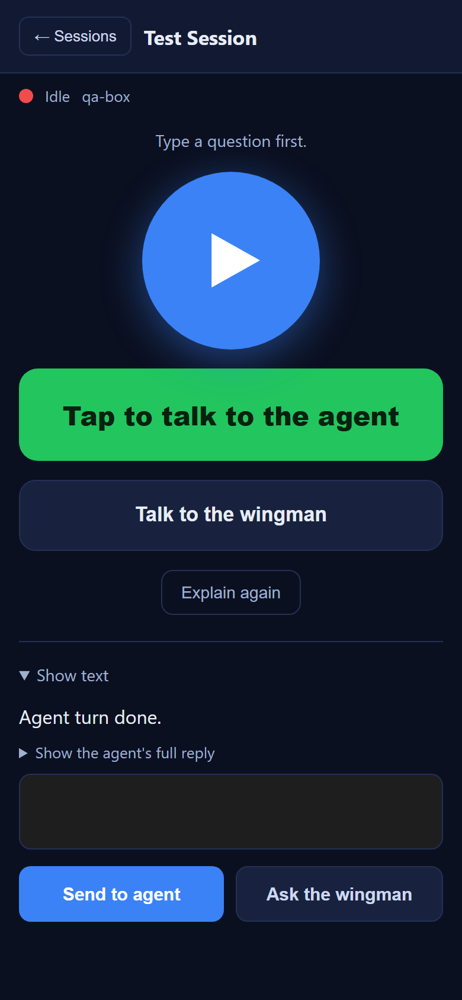
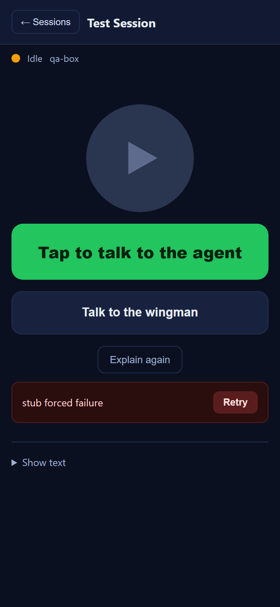

Title: [Voice] /m/ text send (agent + wingman): clear textbox on tap and show sent + working state
PR: #538 (branch issue-532-clear-textbox-wingman-feedback, brought
up to date with main before the build gate)
Method: Independent verification. The QA Agent did NOT reuse the Developer
Agent's binary or screenshots. The actual PR-branch wwwroot/m/ assets
(index.html, m.js, sw.js) were served and driven in headless
Chromium at a 390x844 mobile viewport, with the gateway endpoints stubbed. Each criterion was
checked by reading live DOM state (textarea value, <details> open state,
#busy-bar class, #hero-status/#hero-summary text) AND by the
recorded /wingman/ask-direct POST bodies, plus screenshots.
| # | Acceptance criterion | Expected | Actual (measured) | Result |
|---|---|---|---|---|
| AC1 | Tap Send to agent (non-empty) clears the textarea within ~100ms (before the turn completes) | #typed-text value == "" synchronously on tap |
value read immediately after the click handler returned == "" (was "agent message here") | PASS |
| AC2 | Tap Ask the wingman (non-empty) clears the textarea within ~100ms | #typed-text value == "" synchronously on tap |
value read immediately after the click handler returned == "" (was "Please summarize the last 3 turns") | PASS |
| AC3 | Empty/whitespace tap does NOT clear or send; shows the existing prompt (both buttons) | value kept; "Type or record something first." (agent) / "Type a question first." (wingman); no send | agent: value kept " ", hero="Type or record something first."; wingman: value kept " ", NO /wingman/ask-direct call fired, hero="Type a question first." | PASS |
| AC4 | (Wingman) sent/working confirmation visible from the bottom panel WITHOUT scrolling | panel collapses and top status surfaces | on tap (synchronous read): text-section.open=false, #busy-bar NOT hidden, #hero-status="Asking the wingman..." | PASS |
| AC5 | (Wingman) in-progress indicator persists then is replaced by the answer; no stuck indicator | after success: busy-bar hidden AND wingman answer rendered | after the stubbed answer resolved: #busy-bar hidden==true; #hero-summary="Here is the wingman summary of the last three turns." (the latent stuck-bar bug is fixed - the direct-wingman success path now hides #busy-bar) | PASS |
| AC6 | (Wingman) on failure: error + Retry; Retry re-sends the ORIGINAL typed text (not lost by the early clear) | error box + Retry button; Retry POST body identical to the first send | error box shown with "stub forced failure" and a "Retry" button; textarea already cleared; both POST bodies were byte-identical: {"text":"Original retry message 42"} on the first send and again on Retry | PASS |
| AC7 | Cache-bust version bumped so the new bundle loads | v14 -> v15 in the asset queries, the on-screen label, and the service worker | on-screen label reads "v15"; index.html references m.css?v=15 and m.js?v=15; sw.js cache name wingman-voice-v15 and SHELL ?v=15; NO v14 remains anywhere | PASS |
CcDirector.Cockpit/wwwroot/m/ (m.js,
index.html, sw.js). No server-side, architecture, or security change - so
no CenCon document update is triggered, and no blocking DT security rule is touched.main (which carries the
NU1903 SQLitePCLRaw fix, commit 5b76bfc) and dotnet build cc-director.sln reported
Build succeeded / 0 Warning(s) / 0 Error(s).






QA Agent (CenCon Development Method) - independent verification, 2026-06-19.